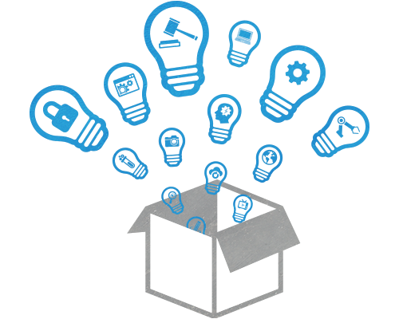

CRIMES AGAINST PROPERTY
Home || Crimes against Individuals || Crimes against Property || Crime against Businesses || Crimes against Government || Future Transformation || Reference List|| About Creator
Three types of crimes against individuals include:
- Intellectual property Theft
- Burglary
- Bank Robbery
Intellectual property
Definition of intellectual property according to Collins Dictionary:
Intellectual property is something such as an invention or a copyright which is officially owned by someone.
Examples of intellectual property theft in the past with the absence of technology
In 1994, Adidas and Payless got into a scuffle over stripes. Adidas had used its three-stripe mark as a logo of sorts since 1952, and had
recently registered it as a trademark. But Payless was selling similar athletic shoes with two and four parallel stripes. The two companies
made a settlement, but by 2001, Payless was again selling the look-alikes. Fearing that the sneakers would dupe buyers and tarnish its name,
Adidas America Inc. demanded a jury trial. The trial lasted seven years, during which 268 pairs of Payless shoes were reviewed. In the end,
Adidas was awarded $305 million-$100 million for each stripe (Gambino, 2011).

How have technology evolved the way intellectual property theft is committed?
Technology have evolved the way this crime is committed by allowing different persons to gain digital access to intellectual property.
Some common online intellectual property theft include: Software piracy which is the illegal copying, distribution, or use of software
and Video piracy which is when a film is produced in the form of a DVD without proper authorization from the right holder.
What are actions/responses that may mitigate the effect of technology on intellectual property theft ?
Software companies should have a license key which gives an authorized user/purchaser a data string that, upon installation, unlocks a software
product and makes it available for use. These companies can also encrypt the source code within an application to prevent reverse engineering and theft.
How can manufacturing of counterfeit products be mitigated with the use of technology?
Manufacturing of counterfeit products is a type of intellectual property crime. Various apps are used as tools for companies and customers to fight
against counterfeiting. The uFaker app is designed to allow brand owners to share and track counterfeit activities with law enforcement, lawyers and
private investigators (Kusic, 2014).
Burglary
Definition of burglary according to Collins Dictionary:
the act of breaking into any building at any time to commit theft, some other felony, or a misdemeanor
Examples of burglary crimes in the past with the absence of technology
R v Brown [1985] Crim LR 212 - In 1985, A witness, having heard the sound of breaking glass, saw the defendant partially inside a shop front display.
The top half of his body was inside the shop window as he were rummaging inside it. The defendant was convicted of burglary ("Cases on Burglary," 2013).
How have technology evolved the way burglary is committed?
Most buildings in the 21st century have security systems that allow hackers to easily gain access. Hackers are able to control lights in the buildings,
security cameras, automatic doors and other electronics. This will allow them to steal much quicker than without technology.
What are actions/responses that may mitigate the effect of technology on burglary ?
Buildings that have security cameras and other hackable devices should be secured with a firewall a consistently check the firewall for any weak spots
that hackers can get through.
How can carjacking be mitigated with the use of technology?
Carjacking - When a person takes a vehicle through force, violent acts or the threat of intimidation, a person has committed the crime of carjacking
("Crime of Carjacking," n.d). This can be mitigated by using GPS tracking to locate where a car is going and where it went so people will think twice
before stealing.
Bank Robbery
Definition of burglary according to Collins Dictionary:
an attack on a bank, often involving firearms and violence, with the aim of stealing money or other valuables.
Examples of burglary crimes in the past with the absence of technology
In he heat of Lebanon's civil war in 1976, a group associated with the Palestinian Liberation Organization blasted through the British Bank of The
Middle East walls through a church next door and hired a team of locksmiths to open the vault. They reportedly walked away with up to $50 million
worth of gold, cash, stocks, and jewels (McGauley, 2015).
 How have technology evolved the way burglary is committed?
How have technology evolved the way burglary is committed?
Since the emergence of technology, violent bank robberies have seen a decline in recent years. With consumers increasingly making purchases
and banking transactions online, bank robbers are now hackers who find new ways to steal your identity, credit card information and bank logins
(Ketchum, 2017).
What are actions/responses that may mitigate the effect of technology on burglary?
In terms of security for widespread digital transactions, banks employ antivirus protection programs, firewalls to block unauthorized online access
and encryption programs to encourage secure and private online banking logins from customers (Ketchum, 2017).
How can online bank theft be mitigated with the use of technology?
Before online banking heists, Silent alarms covertly contacted law enforcement to help keep tellers safe, and surveillance cameras captured in-person
bank robberies (Ketchum, 2017).